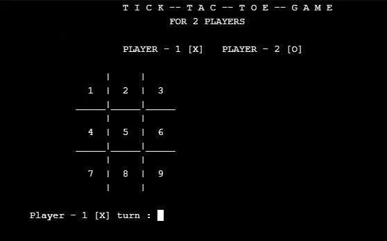
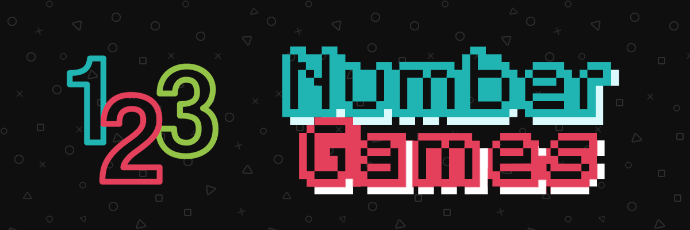

Web developer| Full stack web developer| C++ programmer| DSA
- "Welcome to my portfolio! I am a dedicated and passionate developer with experience in C++ programming and web developer, having completed an internship with NextGenDev. I have worked on a variety of projects, including a Number Guessing Game, a Simple Calculator, and a Tic-Tac-Toe Game. Currently, I am expanding my skills through an internship at Codsoft. Explore my work and see how I bring innovative solutions to life."
This project implements a classic Tic Tac Toe game using C++. The game allows two players to play against each other on a 3x3 grid. Players take turns marking a cell in the grid with their respective symbols (X or O). The game checks for win conditions after each move, including horizontal, vertical, and diagonal lines. If a player successfully aligns three of their symbols, they win the game. If the grid is filled without any player winning, the game results in a draw. The program uses simple text-based input and output for interaction with the players.
This project implements a Number Guessing Game using C++. The program randomly generates a number within a specified range (e.g., 1 to 100), and the player tries to guess the number. After each guess, the game provides feedback indicating whether the guessed number is too high, too low, or correct. The player continues to guess until they find the correct number. The program also keeps track of the number of attempts taken by the player and displays it at the end of the game.
Email:-shivkmg0000g@gmail.com
Phone:-9368654774